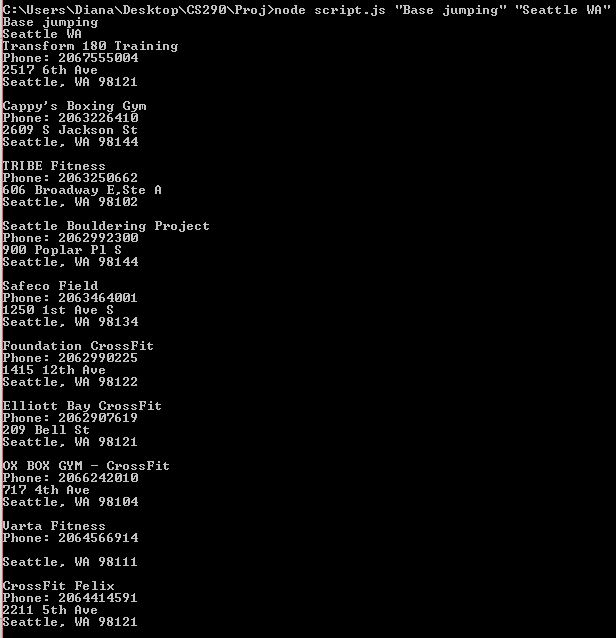

Raw API Data
Using the search parameters "busType: 'ice cream', location: 'Oakland CA' ", the unfiltered content returned from the API and output to the console looks like this:

Using the search parameters "busType: 'ice cream', location: 'Oakland CA' ", the unfiltered content returned from the API and output to the console looks like this:
Although the raw data is helpful in demonstrating all business attributes available to you, you need to first convert it into a useable form for access to individual elements. Recall from the previous section that the callback data type requested was JSONP. To get to each business and its attributes within the returned object (and to make pretty formatting), the object is stringified into a JSON string and then parsed into individual JSON objects. Each object represents a single business.

Business attributes can then be displayed on a web page or logged at the console. Below, a "for"loop is used to move through the business objects and print out the desired attributes. Here, we've chosen to display the thumbnail picture of the business and Yelp link, the rating, name, phone number and address. You can see the working version of the code on the next page.

Here are the final results from the command line query, neatly parsed and displayed to output:
